Garret is a mercenary you can unlock in the pirate ship.
| Black terror | |
|---|---|
| Attack your target for 580% of your damage. Target hit deals 50% less damage for the next 2 seconds. Cost: 30 Rage. | |
| Bone cage | |
|---|---|
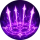 |
Force all enemies to attack you and increase your health by 120% for 15 seconds. 25 seconds cooldown. Cost: 45 Rage. |
| Last Stand | |
|---|---|
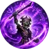 |
Inspire your allies, granting them 50% more armor and increase their attack speed by 20% for 25 seconds.. 25 seconds cooldown. Cost: 60 Rage. |
| Weapon | Chest | Boots | Ring | |
|---|---|---|---|---|
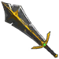 |
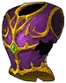 |
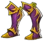 |
||
| Wrist | Shoulder | Belt | Relic | |
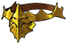 |
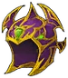 | |||
| Ankh | Rune | Idol | ||
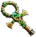 |
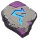 |
|||
| Talisman | Necklace | Trinket | ||
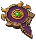 |
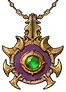 |
Garret's childhood unfolded within the damp confines of his father's butcher shop, a place permeated with the metallic scent of blood and the ceaseless symphony of cleavers against bone. His father, a skilled butcher known throughout the village, taught him the art of carving and preparing meat, and he expected nothing short of excellence from his only son. As soon as Garret could wrap his fingers around a knife, he was thrust into the world of carcasses and cuts.
Days turned into years as Garret's hands became accustomed to the rhythm of slicing meat. The dull thuds of cleavers echoed in his dreams, a constant reminder of his familial duty. Yet, within the crimson-stained walls of the butcher shop, Garret's spirit remained untamed. He yearned for a life beyond the confines of dripping carcasses, longing for something more than the perpetual grind of blades.
As adolescence beckoned, Garret's duties at the butcher shop increased. His hands, once unsteady, now danced with precision, carving meat with an almost artistic finesse. The village admired his skill, but Garret found solace in the quiet moments between slabs of meat. His heart craved something more profound than the routine of his daily life.
It was during these years that he first glimpsed Arvie, the forester's daughter, a vision of wild grace. Their worlds seemed galaxies apart, yet Garret found himself drawn to the untamed beauty that emanated from her. Their encounters were brief but filled with stolen glances and unspoken yearning, kindling a spark that defied the boundaries imposed by their upbringing.
The turning point came when Arvie, carrying the spoils of her hunts, stepped into the butcher shop. The mingling scents of fresh meat and the outdoors filled the air as their eyes met across the counter. In that moment, the world outside faded away, and the connection between them ignited like the flame of a newly lit torch. Garret, enchanted by the wildness in Arvie's eyes, felt a longing that surpassed the boundaries of their separate lives.
With every clandestine meeting, Garret and Arvie's love deepened. In the shadows, they discovered a world where societal expectations held no sway. Their stolen moments beneath the moonlight and behind the forest's protective veil were filled with whispers of promises and declarations of love. The village gossiped, but the two lovers reveled in the forbidden nature of their affection, unwilling to succumb to the pressures that sought to tear them apart.
As the Undead menace swept across the province, Garret faced an agonizing choice - duty or love. The invading darkness claimed the lives of those around him, leaving behind a trail of sorrow. Unable to bear the thought of life without Arvie, Garret and his beloved chose to meet their end together, entwined in a final act of defiance against the encroaching doom. In death, they found a tragic unity, their love enduring beyond the mortal realm.
In the throes of death, Garret and Arvie embraced each other, fully expecting eternal oblivion. Yet, the cold clutches of the Undead did not release them from their ephemeral existence. Instead, the duo awoke to the darkness, their senses heightened, and their hearts devoid of the warmth they once knew.
Unbeknownst to them, the Undead horde had claimed them, reanimating their lifeless bodies to serve as soldiers in the army of the damned. But, in the twisted irony of their fate, Garret and Arvie found solace in the fact that they were not separated by death. Their love, now a sinister parody of what it once was, became the tether that bound them in this new, nightmarish existence.
Wielding an ancient obsidian cleaver obtained from a long- forgotten burial, Garret moved with an eerie grace. The blade, once used to sever ties between the living and the dead, now served as an extension of his spectral will. Arvie, her skeletal bow gifted by their new masters, became a haunting figure, her arrows seeking out the hearts of the living.
Together, they danced through the shadows, a macabre waltz of death. Their connection transcended the horror of their actions as they carved a path through the living, no longer bound by the moral constraints that had once defined their lives. They reveled in the carnage, finding a twisted satisfaction in the chaos they wrought.
In the darkness, Garret and Arvie rarely spoke of the atrocities they committed. The Undead invasion had turned them into monsters, and their love, now entwined with death, shielded them from the weight of their actions. They roamed through villages, leaving trails of destruction in their wake, driven only by the insatiable hunger instilled by their Undead masters.
Yet, in the silent moments between battles, a flicker of their former selves would emerge. Garret would gaze into Arvie's empty eye sockets, and she, in turn, would feel the cold touch of his skeletal hand. In those fleeting instances, they remembered the warmth they once shared, even as the world around them burned.
As the Undead horde marched relentlessly, Garret and Arvie clung to each other, their devotion unbroken by the passage of time. They were no longer driven by the desires of the living; their purpose was to serve the Undead, and their love became a curse that bound them to this unending nightmare.
In the abyss of their cursed existence, Garret and Arvie, despite their skeletal forms, felt a lingering spark of the love that once defined them. Their masters, sensing the rebellious embers within their souls, sought to tighten their control. However, Garret and Arvie, bound by a love stronger than death itself, hatched a plan to break free from the shackles that held them in servitude. Under the cover of night, as the moon cast its ethereal glow upon the desolate landscape, Garret and Arvie made a solemn pact. The skeletal lovers, fueled by the remnants of their humanity, whispered promises of redemption in the silence of the forsaken night.
The battle for their souls was fierce. The Undead masters, sensing the rebellion within their ranks, unleashed their wrath upon Garret and Arvie. In the ocean of darkness, the skeletal lovers clung to each other, drawing strength from the love that had endured the trials of both life and death. Garret and Arvie, in an act of defiance, shattered the chains that bound them. With the echoes of their breaking liberation resonating through the night, the skeletal lovers ran, unshackled and free.
Embracing their newfound freedom, Garret and Arvie turned away from the malevolent horde. No longer slaves to the Undead masters, they embarked on a journey to seek redemption for the sins committed under the dark control. The skeletal couple, their love shining as brightly as the moon that guided them, sought to undo the harm they had inflicted upon the living. The skeletal lovers, now protectors rather than destroyers, fought side by side for the redemption of their souls.
Their love, once twisted by the darkness, had become a force of good that vanquished the lingering shadows. Garret's obsidian cleaver and Arvie's skeletal bow, once instruments of death, were now wielded in defense of the helpless. Together, they carved a path of redemption, a testament to the enduring power of love even in the face of unimaginable darkness.
No longer bound by the limitations of mortal life, they roamed the world, fighting for the innocent and dispelling the remnants of the Undead menace. Together, they stood as guardians of the living, their skeletal frames a stark reminder that even in the darkest corners, love had the power to conquer all. And so, Garret and Arvie, bound by an eternal love that defied both life and death, ventured into the horizon, their skeletal hands entwined as they faced an eternity together, united in triumph.
{kind=link}
{kind=link}
{kind=link}
{kind=link}
{kind=link}
{kind=link}
{kind=link}
{kind=link}
{kind=link}
{kind=link}
{kind=link}
{kind=link}
{kind=link}
{kind=link}
{kind=link}
{kind=link}
{kind=link}